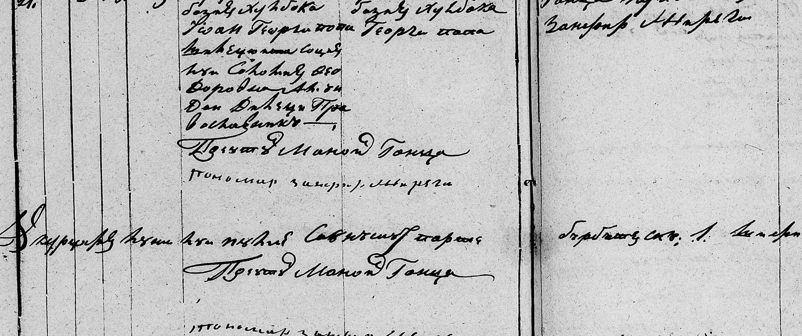
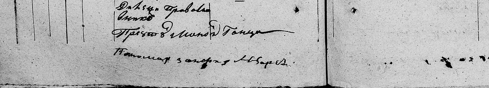

Agenția Națională a Arhivelor · Prototip
Profil de scris · parohia Ghidighici
Un profil ține câteva rânduri corectate de arhivist, numele care se repetă și observații despre scris. Se trimite la începutul fiecărei transcrieri din aceeași parohie, ca modelul să citească „în mâna” copistului.
Cum se construiește: după o transcriere, arhivistul alege o înregistrare, verifică rândul decupat din imagine, corectează lectura și apasă „Adaugă în profil”. Profilul se descarcă și se încarcă data viitoare (nu se păstrează pe server).

Lectura verificată: м. 21. | 20 Іюлие | 28 Іюлие | Геѡрге | m | църанѹ дин Слобозиѣ Лѹнка Іѡан Георги попа ши жѹпънеаса? соція лѹи Евдохия Ѳеодорова? амъндой дин Леџѣ Православникъ | Църанѹ дин Слобозиѣ Лѹнка Георге Попа | Прѣѡтѹл Маноил Гонца; Пономар Зиновер? Мъреги?; (col. dreaptă) Прѣѡтѹл Дикотор? Маноил Гонца Кутъпоматор? Зиновер? Мъреги? | luna din rubrica „Луна ши зіоа” (Іюлие)

Lectura verificată: ж. 13. | 3 Авгѹст | 12 Авгѹст | Елисавета | f | църанѹ дин сатѹл Лазъни? Андрей Александров ши жѹпънеаса? соція лѹи Екатерина Георгиевна амъндой дин леџѣ православникъ | Зиновиѧ? соція лѹи Коцъски? Дѣнистратор? Маноил Коса? Дин сатѹл Лазъни? | Прѣѡтѹл Маноил Гонца; Пономар Зиновер? Мъреги?; (col. dreaptă) Прѣѡтѹл Маноил Гонца Дикотор? Константин? Зиновер? Мъреги? | luna din rubrica „Луна ши зіоа” (Авгѹст)